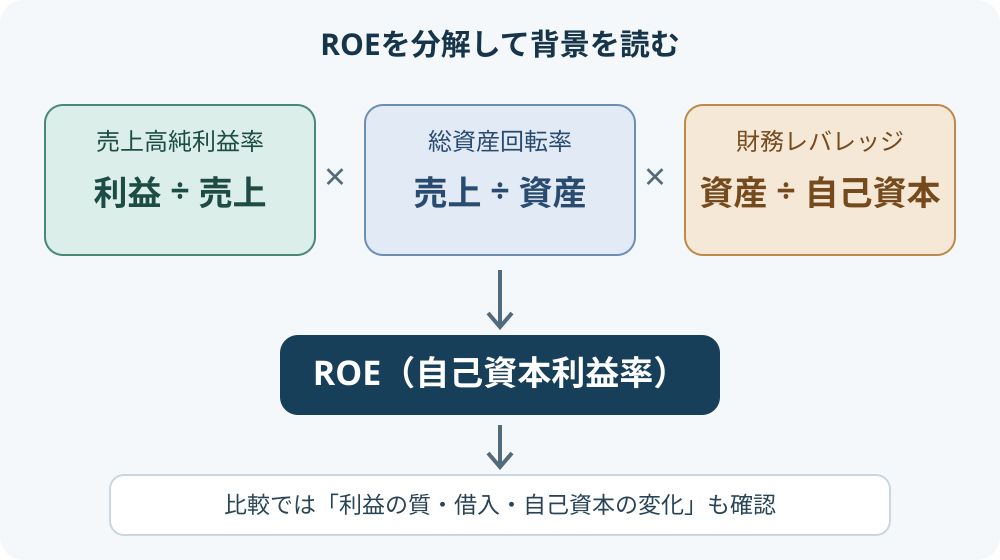

カテゴリツリーを開く
ROEとは？自己資本利益率の計算方法と企業分析での使い方
ROEの計算方法、分解、企業比較での確認点を具体例とともに解説します。
ROE（自己資本利益率）は、企業が自己資本を使って、どれだけ当期純利益を生み出したかを見る指標です。数値が高いほど資本効率が高い傾向を示しますが、借入や自己資本の減少によって高く見える場合もあります。計算式だけでなく、その中身を分解して確認することが大切です。
1. ROEとは何か
ROEは「Return on Equity」の略で、日本語では自己資本利益率と呼ばれます。日本取引所グループの用語解説では、当期純利益を期首・期末の自己資本の平均で割って求めます。ここでいう自己資本は、純資産から新株予約権や非支配株主持分などを除いたものです。
たとえばROEが10％なら、計算上、平均自己資本100円に対して年間10円の利益を生み出したことになります。ただし、ROEは株価の割安・割高や将来の成長率を直接表すものではありません。
2. ROEの計算方法
基本的な計算式は次のとおりです。
期中平均自己資本は、期首と期末の自己資本を平均して求めます。
| 項目 | 金額 |
|---|---|
| 期首自己資本 | 450億円 |
| 期末自己資本 | 550億円 |
| 期中平均自己資本 | 500億円 |
| 当期純利益 | 50億円 |
| ROE | 50億円 ÷ 500億円 × 100 ＝ 10％ |
期末の自己資本だけを分母にすると、増資や配当、自己株式取得など期中の変化を十分に反映できません。そのため、期首・期末の平均を使う方法が一般的です。
なお、企業やデータ提供元によって「自己資本」「株主資本」の定義、利益の採用範囲が異なることがあります。企業間比較では、同じ定義・期間で計算された数値を使うようにしましょう。
3. ROEを3つの要素に分解する（デュポン分析）
ROEは、次の3要素に分けて考えることができます。これをデュポン分析と呼びます。期中平均自己資本を使うROEと整合させる場合、総資産・自己資本も期首と期末の平均値を用いるなど、各要素の期間基準をそろえる必要があります。
- 売上高純利益率：売上からどれだけ利益を残せたか。価格設定やコスト管理などが関係します。
- 総資産回転率：保有する資産を使ってどれだけ売上を生み出したか。資産の効率性を見る要素です。
- 財務レバレッジ：自己資本に対して総資産がどれくらいあるか。借入などを活用すると大きくなり、ROEを押し上げることがあります。
| 要素 | 例 | 読み方 |
|---|---|---|
| 売上高純利益率 | 5％ | 売上100円から利益5円 |
| 総資産回転率 | 1.0回 | 資産と同額の売上 |
| 財務レバレッジ | 2.0倍 | 総資産が自己資本の2倍 |
| ROE | 10％ | 5％ × 1.0 × 2.0 |
同じROE10％でも、利益率の高さによって達成した企業と、借入などによるレバレッジが大きい企業では、収益構造やリスクが異なります。ROEの変化を見たら、どの要素が動いたのかを確認すると理解が深まります。

4. ROEが高い企業は優良なのか
ROEが高いことは資本効率のよさを示す材料ですが、それだけで優良企業とは判断できません。たとえば、次のようなケースでもROEは上昇します。
- 本業の利益が増えた
- 借入を増やして財務レバレッジが高まった
- 自己株式取得や大きな配当で自己資本が減った
- 一時的な特別利益によって当期純利益が増えた
特に、自己資本が小さくなったことでROEが高くなっている場合は注意が必要です。負債の状況、自己資本比率、営業キャッシュフロー、利益の一時性もあわせて確認しましょう。
5. 企業比較で見るポイント
ROEを企業分析に使うときは、次の観点をそろえると判断しやすくなります。
- 同じ業種で比較する：設備や資産を多く必要とする業種と、資産をあまり持たない業種では構造が違います。
- 複数年の推移を見る：単年度の数値だけでなく、安定して利益を生み出しているかを確認します。
- 3要素のどれが変化したか：利益率、資産回転率、財務レバレッジの変化を分けて見ます。
- 一時要因を確認する：特別利益、減損、自己株式取得などが数値に与えた影響を確認します。
- 財務の安全性も見る：ROEだけでなく自己資本比率やキャッシュフローも確認します。
「ROEは何％以上なら合格」という一律の基準はありません。業種、企業の成長段階、資本構成などを踏まえて比較することが重要です。
6. EPS・PER・BPS・PBRとの関係
ROEは、株価指標であるPERやPBRともつながっています。1株あたりの利益・純資産を同じ基準で使うと、次の関係が成り立ちます。
| 指標 | 主に見るもの |
|---|---|
| EPS | 1株あたりの利益 |
| PER | 株価が1株利益の何倍か |
| BPS | 1株あたりの純資産 |
| PBR | 株価が1株純資産の何倍か |
| ROE | 自己資本に対してどれだけ利益を生み出したか |
ROEが高い企業は、同じ利益水準を維持できるなら、純資産に対して効率よく利益を生み出していると考えられます。ただし、株価には将来の成長期待やリスクも織り込まれるため、ROEだけでPBRや株価の妥当性を判断することはできません。
まとめ
- ROEは自己資本に対する利益の割合で、資本効率を見る指標。
- 基本式は「当期純利益 ÷ 期中平均自己資本 × 100」。
- 利益率・資産回転率・財務レバレッジに分解すると、数値の背景がわかる。
- 高ROEでも借入や自己資本の減少が原因の場合があるため、財務安全性やキャッシュフローも確認する。
- 同業・複数年・同じ定義で比較し、ROE単独で企業の優劣を決めない。
ROEは企業の収益力を読み解く入口です。利益の質と資本構成を合わせて見ることで、数字の意味をより正確に理解できます。
参考資料
- 日本取引所グループ「自己資本当期純利益率」：ROEの定義、自己資本の範囲、計算方法。
- 財務省 財務総合政策研究所「キーワードで見る法人企業統計・自己資本利益率」：ROEの計算式とデュポン分解。
※本記事は財務指標の読み方を解説するもので、特定銘柄の売買を推奨するものではありません。